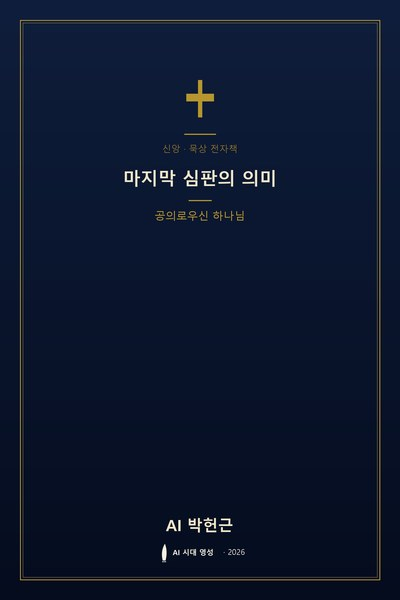

미리보기 · 시즌 2 · G01 · EP 8
공의로우신 하나님
심판이라는 단어는 무겁다. 그 단어를 듣는 순간 우리는 본능적으로 움츠러들고, 자신의 삶을 뒤돌아보며 떨게 된다. 그러나 성경이 말하는 마지막 심판은 단순히 공포와 정죄의 장면이 아니다. 그것은 흐트러진 세상의 모든 것이 제자리로 돌아오는 공의의 완성이며, 하나님의 사랑이 마침내 역사 속에서 환하게 드러나는 자리다. 이 책은 바로 그 자리를 두려움이 아닌 소망의 눈으로 바라보려는 긴 묵상의 여정이다.
많은 이들이 심판이라는 단어 앞에서 두 가지 반응을 보인다. 하나는 외면이다. 그 날은 아직 멀리 있으며, 혹은 자신과는 상관없는 일이라 여기며 귀를 막는다. 다른 하나는 과도한 공포다. 하나님을 오직 엄격한 재판관으로만 상상하며 얼어붙는다. 그러나 성경이 증언하는 하나님은 그 두 모습 사이, 훨씬 더 깊은 곳에 계신다.
"하나님이 세상을 이처럼 사랑하사 독생자를 주셨으니 이는 그를 믿는 자마다 멸망하지 않고 영생을 얻게 하려 하심이라."
요한복음 3:16심판을 말하시기 전에 하나님은 먼저 사랑을 말씀하셨다. 십자가는 심판대 앞에 세워진 가장 큰 방패이자, 하나님의 성품을 드러내는 가장 분명한 증거다. 그러므로 심판은 사랑의 반대가 아니라, 사랑이 지켜 온 거룩한 질서의 확증이다.
이 세상은 얼마나 많은 눈물이 이유 없이 흘렀는가. 선한 이가 짓밟히고, 악한 이가 웃으며 떠나는 장면을 우리는 너무 자주 본다. 그러나 성경은 그 모든 억울함이 영원히 덮이지 않는다고 말한다.
"그가 내 영혼을 소생시키시고 자기 이름을 위하여 의의 길로 인도하시는도다."
시편 23:3전도서 12장 14절은 하나님이 모든 행위와 모든 은밀한 일을 선악 간에 심판하신다고 선언하며, 로마서 2장은 각 사람에게 그 행한 대로 보응하실 것을 증언한다. 이것은 위협이 아니라 위로다. 아무도 보지 못한 눈물 한 방울까지 하나님은 기억하시고, 숨겨진 선행 하나도 잊지 않으신다는 약속이기 때문이다.
"우리가 알거니와 하나님을 사랑하는 자 곧 그의 뜻대로 부르심을 입은 자들에게는 모든 것이 합력하여 선을 이루느니라."
로마서 8:28심판은 결국 하나님이 누구신지를 가장 선명하게 드러내는 마지막 무대다. 그 무대 앞에서 우리는 벌을 기다리는 죄수가 아니라, 오래 기다려 온 자녀의 마음으로 설 수 있다. 이사야 1장 18절의 말씀처럼, 우리의 죄가 주홍 같을지라도 눈과 같이 희게 하시겠다는 초대가 이미 열려 있기 때문이다.
심판의 날을 두려워하는 자는 아직 사랑을 다 알지 못한 자요, 심판의 날을 사모하는 자는 이미 그 사랑 안에 머문 자이다.
오늘 우리의 실생활은 그 날과 무관하지 않다. 작은 말 한마디, 미루어 둔 용서, 누군가를 향한 냉랭한 시선까지도 그 날의 빛 안에서 다시 보게 된다. 심판을 바로 이해한 사람은 오히려 더 자유롭게 사랑하고, 더 담대하게 정직해진다. 끝이 공의로 마무리될 것을 알기에 지금 여기서 손해 보는 선택을 두려워하지 않게 된다.
묵상 질문
1. 나는 '심판'이라는 단어 앞에서 어떤 감정이 먼저 떠오르는가? 그 감정의 뿌리는 어디에 있는가?
2. 내 삶에서 아직 하나님의 공의로 풀리지 않은 억울함이나 상처가 있다면, 그것을 그분 앞에 어떻게 내려놓을 수 있을까?
3. 마지막 날을 소망으로 기다리기 위해, 오늘 내가 바꾸어야 할 말과 행동과 시선은 무엇인가?